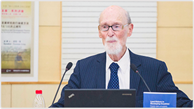
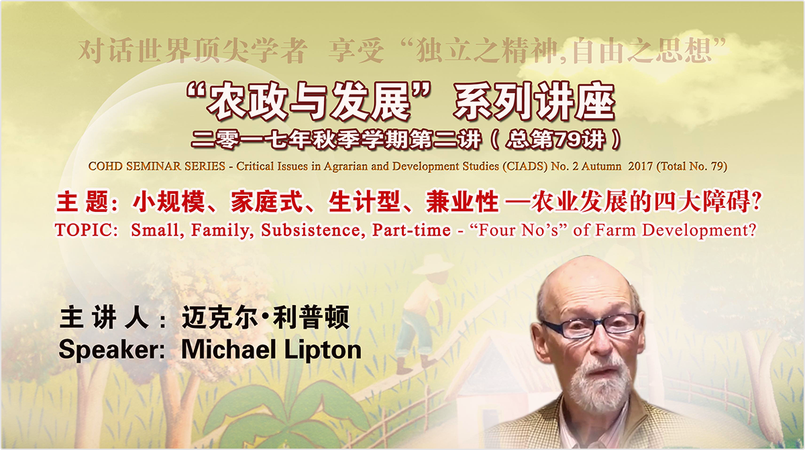

Trajectories of Political Ecology
Official Vision
| Speaker: | Nancy Peluso, Henry J. Vaux Distinguished Professor of Forest Policy, Professor of Environmental Social Science in Department of Environmental Science, Policy and Management in University of California (Berkeley), US |
| Moderator: | Ye Jingzhong |
| Language: | Chinese |
| Time: | 15:00 – 16:40, Friday 10 November 2017 |
| Venue: | Room 008, CIAD, West Campus |
| Contact: | Pan Lu, Tel: 18701331969, Email: ledapan@gmail.com |

Brief Introduction To The Invitees:
Prof. Nancy Peluso was born in 1952 and got her Master degree in Rural Sociology in 1983 and later her Ph.D degree in Sociology of Agriculture and Natural Resources in 1988 both from Cornell University. She worked as Assistant Professor and Associate Professor of Resource Policy in Yale School of Forestry and Environmental Studies, and then has been lecturing in University of California (Berkeley) since 1997. She serves now as a Henry J. Vaux Distinguished Professor of Forest Policy, Professor of Environmental Social Science in Department of Environmental Science, Policy and Management. She is also an Editorial Collective Member for The Journal of Peasant Studies. She has broad research interests in environmental policy, forestry, environmental studies, resource management and policy, rural development, environmental sociology, political ecology and etc. She now conducts research on the social processes that affect the management of land-based and coastal resources. Her work explores various dimensions of resource access, use, and control, while contrasting local, national, and international influences on management structures and processes. Her representative works include Rich Forests, Poor People: Resource Control and Resistance in Java (1994), Beyond Slash and Burn: Building on Indigenous Management of Borneo’s Tropical Rain Forests (1997). She also contributed to a lot of publications as editor including Borneo in Transition: People, Forests, Conservation, and Development (1996), Violent Environments (2001), New Frontiers of Land Control (2012).

<< back